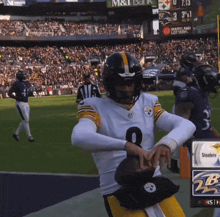

Projections lied to some of you. Let's see who.
Sorted by how far each team landed above or below its own projection.
| Team | Manager | Proj | Actual | Diff | Grade | Res |
|---|---|---|---|---|---|---|
| Nabers ate my Zombies | JJ | 241.0 | 326.55 | +85.6 | A+ | W |
| Donuts All Day 24/7 | Alby | 237.7 | 313.95 | +76.3 | A | W |
| Catchy Football Name | McCarty | 249.7 | 298.35 | +48.6 | A- | W |
| Texas Determined Domination | Kolby Gilseth | 214.4 | 224.3 | +9.9 | B+ | L |
| Hellen Keller's Dodgeball Squad | Ryan Guest | 252.0 | 257.75 | +5.7 | B | W |
| Covfefe is for Closers | David Pannell | 248.3 | 246.85 | -1.5 | B- | W |
| MaHOMELANDER | Kevin Guest | 257.8 | 247.3 | -10.5 | C+ | L |
| Waddle On Deez Nuts | Lucas McMahon | 244.7 | 233.3 | -11.4 | C | L |
| Kenz VishusLicks | Ken Glover | 209.8 | 185.45 | -24.3 | D+ | L |
| Hurt Me Moore | Joydip Joy | 254.9 | 215.0 | -39.9 | F | L |
Grade reflects performance vs. this team's own projection, not raw score — beating a low projection can outgrade a loss, and blowing a big one while still winning can still land a C.
Note: no optimizers were spent this week, so every actual total is the sum of its starters' points.
JJ scored 326.55, the highest total in the league by 12.6 points, and about 126 of them came from three pickups that cost him $7 in total: Aaron Rodgers ($5) scored 43.95 at QB, C.J. Stroud ($1) scored 41.9 at OP, and the Jets D/ST ($1) scored 40.5 on an 18.57 projection. Jahmyr Gibbs scored 51.95, Malik Nabers scored 38.6 on a 17.23 projection, and Mike Evans scored 32.8 on 16.13. He beat his projection by more than anyone in the league, won by 79.25, and is the only 4-1 team. The Jordan Love he cut to make room for Rodgers scored 50.7 for David, and it didn't matter.

Joydip's 300.6 last week included a 20.0-point optimizer. This week's 215.0 didn't, and the lineup showed up without it. Bijan Robinson, Amon-Ra St. Brown, Jalen Hurts, Quinshon Judkins, and Nico Collins all finished under their projections, by a combined 36.11, and Deebo Samuel Sr. scored 3.75 (he's now listed out). Only Jared Goff (48.35) beat his number by any real amount. The Packers D/ST scored 37.0 on his bench while the Patriots D/ST scored 20.5 in the lineup, and his bench scored 60.25 in total, the most in the league. Every swap worth making would have cut the loss to 17.5 and still left it a loss.